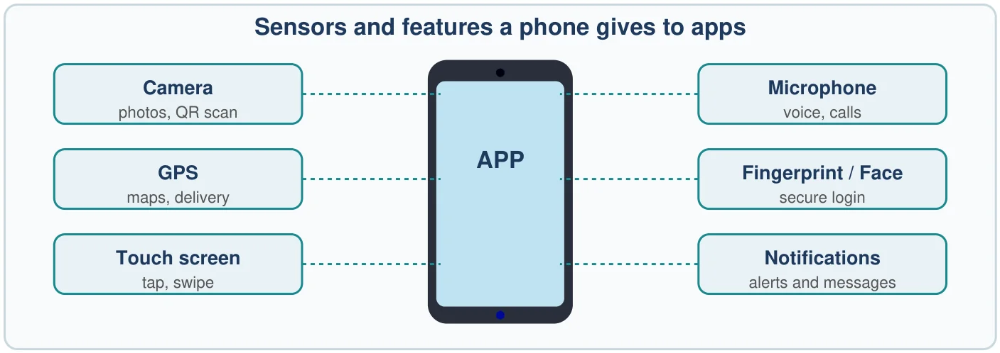

3. Operating systems for mobile phones
Phones also need an operating system. Two systems dominate the world, and knowing them tells you who your app users will be.
| OS | Made by | Devices | Open or closed? | Store |
|---|---|---|---|---|
| Android | Samsung, Oppo, Vivo, Xiaomi, Realme, Pixel and more | Mostly open source | Google Play Store | |
| iOS | Apple | iPhone (iPadOS for iPad) | Closed | App Store |
| HarmonyOS | Huawei | Huawei devices | Own ecosystem | AppGallery |
3.1 Android
- Used by the majority of smartphone owners worldwide, and by most people in Cambodia and Southeast Asia.
- Many brands and price levels, so many screen sizes to support.
- Apps are written mainly in Kotlin or Java and built with Android Studio on Windows, macOS or Linux.
- Publishing on Google Play has a small one-time developer fee.
3.2 iOS
- Runs only on Apple devices, so there are fewer device types to test.
- Apps are written in Swift (older ones in Objective-C) with Xcode on a Mac.
- Apple reviews every app strictly before it appears on the App Store.
- Publishing needs an Apple Developer account with an annual fee.
3.3 Mobile hardware you can use
Phones have sensors that make mobile apps powerful: camera, GPS, accelerometer, fingerprint and face scanner, microphone, Bluetooth, NFC, and push notifications. Websites can use some of these, but mobile apps have the fullest access.

Figure 3.1: A phone is a small computer full of sensors
Remember Always ask who your users are. If your customers mostly use Android phones, start with Android or a cross-platform tool.
Review Questions
- Name the two biggest mobile operating systems and their stores.
- Which tool and language are used for native iOS apps?
- Name five phone sensors or features an app can use.
Was this lesson helpful?